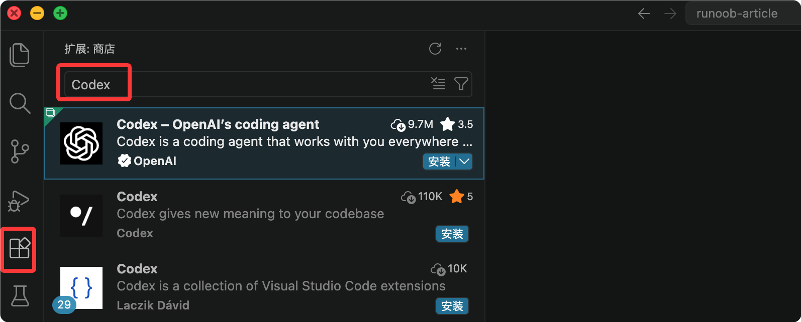

Codex Advanced Usage Tips
After completing the basic installation and the first conversation, the real value of Codex lies in embedding it into your daily development workflow.
This article covers five advanced directions: project configuration, session management, editor integration, CI/CD automation, and prompting tips, helping you make Codex understand your project, remember your conventions, and work automatically in the pipeline.
1. Write an "Onboarding Document" for Codex with AGENTS.md
AGENTS.md is a project manual written for Codex. Placed in the project root directory, it is automatically loaded each time you start and remains in effect throughout the session.
Why You Need It
By default, Codex knows nothing about your project.
It doesn't know whether you use App Router or Pages Router, doesn't know which file database operations should uniformly go through, and doesn't know which files should not be touched.
If you have to re-explain the background in every conversation, efficiency will be very low and errors are likely.
AGENTS.md lets this information be written once and stay in effect, saving the trouble of repeating yourself.
What to Write
An effective AGENTS.md usually contains four types of information: project overview, tech stack, important conventions, and prohibited items.
The following is a complete example:
# AGENTS.md ## 项目概述 这是一个基于 Next.js 14 + Prisma + PostgreSQL 的 SaaS 应用。 使用 App Router，不使用 Pages Router。 ## 技术栈 - 前端：Next.js 14, React 18, TailwindCSS, shadcn/ui - 后端：Next.js API Routes, Prisma ORM - 数据库：PostgreSQL 15 - 认证：NextAuth.js ## 重要约定 - 所有数据库操作必须通过 lib/db.ts 中的 prisma 实例 - API 路由错误统一用 lib/api-error.ts 处理 - 环境变量在 .env.local 中，参考 .env.example ## 禁止事项 - 不要修改 prisma/schema.prisma，除非我明确要求 - 不要删除任何现有测试 - 生产环境的 .env 文件不要碰
The "Prohibited Items" section is especially important. When executing tasks, Codex actively infers which files need modification. Without clear boundaries, it may touch places you don't want it to. Writing the red lines clearly is much easier than fixing problems after they occur.
Hierarchical Structure of Configuration
AGENTS.md supports three levels of nesting, with priority arranged from low to high.
The closer a file is to the current directory, the higher its priority. In the same directory, when AGENTS.override.md exists, the AGENTS.md at the same level will be skipped.
| Level | Path | Scope | Priority |
|---|---|---|---|
| Global Level | ~/.codex/AGENTS.md | Cross-project general conventions | Low |
| Project Level | repo/AGENTS.md | Repository-level conventions | Medium |
| Override Level | repo/services/payments/AGENTS.override.md | Special rules for subdirectories | High |
The global level is suitable for conventions that hold across all projects, for example:
# ~/.codex/AGENTS.md ## 全局约定 - 安装依赖时优先使用 pnpm - 修改 JavaScript 文件后始终运行 npm test - 新增生产依赖前先请求确认
After configuration is complete, you can use the following command to verify that loading is correct:
codex --ask-for-approval never "Summarize the current instructions."
2. Session Management: Continuing Large Tasks Across Days
The session management feature allows you to export the current conversation state to a file and directly restore it next time, without re-establishing the background.
Background
Codex's context window is limited.
When handling a large task that spans multiple files and needs to be advanced in stages, if you close the terminal midway or switch to something else, the context will be lost when you come back — Codex won't remember what was discussed before or which decisions were made.
Exporting the session can solve this problem, allowing you to restore the previous conversation state at any point in time.
Basic Usage
The following are common commands related to session management:
Example
/export session-2024-01-15.json
# Restore when continuing next time
/load session-2024-01-15.json
# Directly resume the most recent session (most commonly used)
codex resume --last
# View all saved sessions
ls ~/.codex/sessions/
When to Export
You don't need to export every conversation. The following situations are worth saving:
| Scenario | Description |
|---|---|
| Multi-stage tasks spanning multiple days | The task spans multiple days with clear phase divisions; after saving, you can continue directly from the last checkpoint next time. |
| Important architectural decisions | Discussed an important architectural decision with Codex, and subsequent tasks need to proceed based on this decision. |
| Complex debugging processes | Debugging a complex bug, already ruled out several directions, don't want to start over next time. |
3. Integration with VS Code
Codex officially provides a VS Code extension. After installation, you can start conversations directly in the editor without switching to the terminal.
Installation and Login
The installation steps are as follows:
Step 1: Open the extension marketplace (Cmd/Ctrl + Shift + X).
-
Step 2: Search for "Codex" or "OpenAI Codex" and install the official plugin.

-
Step 3: You need to log in to your ChatGPT account for first use.
-
Step 4: Once the Codex icon appears in the sidebar, it's ready to use.
After installation, you can use the following keyboard shortcuts for quick actions:
| Shortcut | Function |
|---|---|
| Alt + G | Send selected code to Codex, including the current file context |
| Cmd + Shift + P | Open the command palette, type "Codex" to view all available commands |
BYO Mode (For Users Without a ChatGPT Subscription)
If you've already configured your own API Key in the CLI (Anthropic, OpenAI, or other compatible providers), you can use a free ChatGPT account to log in to the VS Code plugin.
The plugin automatically reuses the CLI's model configuration and doesn't force you to use ChatGPT Plus.
| Applicable scenarios | Description |
|---|---|
| Already have an API Key but don't want to subscribe to ChatGPT separately | Use your own API Key directly, no additional paid subscription required |
| Want VS Code and CLI to use the same model | The plugin automatically reuses the CLI configuration, so both ends have an identical experience. |
4. CI/CD Integration
Codex CLI supports running in headless mode, requiring no human interaction, making it suitable for integration into automated workflows.
What Can Codex Do in a Pipeline
The following are common uses of Codex in CI/CD under headless mode:
| Use case | Description | Typical trigger timing |
|---|---|---|
| Automatically update CHANGELOG | After each merge to the main branch, automatically update CHANGELOG.md based on commit history. | After merging to the main branch |
| Generate API documentation | Automatically generate or sync API documentation based on code changes | After code push |
| Automatic code review | Automatically run code review in the PR pipeline and leave comments | When a PR is created or updated |
GitHub Actions Example
The following workflow automatically lets Codex update CHANGELOG.md based on the latest commits every time code is pushed to the main branch:
Example
name: Auto Update Changelog
on:
push:
branches: [main]
jobs:
update-changelog:
runs-on: ubuntu-latest
steps:
- uses: actions/checkout@v4
- name: Setup Node.js
uses: actions/setup-node@v4
with:
node-version: '22'
- name: Install Codex CLI
run: npm install -g @openai/codex
- name: Run Codex Task
env:
OPENAI_API_KEY: ${{ secrets.OPENAI_API_KEY }}
CODEX_QUIET_MODE: 1
run: |
codex exec --full-auto "Update CHANGELOG.md based on the latest commits"
- name: Commit changes
run: |
git config --local user.email 'action@github.com'
git add CHANGELOG.md
git commit -m 'chore: update changelog [skip ci]'
git push
There are two key points in the configuration that require special attention:
| Configuration item | Purpose | Description |
|---|---|---|
| CODEX_QUIET_MODE: 1 | Suppress interactive output | Avoid the pipeline getting stuck waiting for interactive input |
| --full-auto | Run in headless mode | Let Codex execute directly without supervision, without waiting for confirmation |
When using in CI, it's recommended to explicitly define in the AGENTS.md file at the project root the scope of files Codex is allowed to modify in automatic mode, to prevent unexpected changes due to misinterpretation of prompts.
5. Prompting Tips
The quality of Codex's output depends largely on how you ask your questions.
The following five tips address the most common problems new users encounter, each with specific examples.
Tip 1: Provide Enough Context
Codex can't read minds. An instruction like "fix the bug" will make it guess blindly, and the result often isn't what you want.
Here's a comparison example:
| Not recommended | Recommended |
|---|---|
| "Fix the bug" | "When a user logs in, an error is thrown: TypeError: Cannot read properties of null. The error occurs at line 42 of src/auth/login.ts. This function is responsible for validating JWT tokens. Please find and fix this issue." |
Effective context includes three elements:
| Element | Description | Example |
|---|---|---|
| Specific symptom | Error message or specific behavior | TypeError: Cannot read properties of null |
| Location involved | File and line number | Line 42 of src/auth/login.ts |
| Code responsibility | The original purpose of this code | Validate JWT token |
Tip 2: Split Complex Tasks into Two Steps
For tasks with a large scope of changes, first have Codex analyze and outline a plan, then execute after confirming it's on the right track.
Doing it all in one step may look faster, but the cost is higher if the direction is off.
Example
codex "Analyze the code quality of the src/api/ directory and list the main issues. Don't modify any files."
# Step 2: Execute after confirming the plan
codex "OK, go with your proposed plan. Start with the error handling issues; I'll review the rest later."
Tip 3: Use Ask Mode to Understand the Codebase First
askAsk mode is a read-only mode, suitable for understanding the structure and logic of existing code before making changes.
Understanding before changing saves time compared to going back to understand after making changes.
Example
# ask 模式不会触发任何文件修改 codex -a ask "这个项目是如何处理用户认证的？梳理完整的认证流程"
Once you have a clear understanding, exit the current session and restart in editable mode:
# 可编辑模式（需要确认） codex -a auto # 全自动执行（谨慎使用） codex -a full-auto
Recommended workflow:
ask ↓ 理解代码结构 ↓ 确定修改方案 ↓ 重新启动 Codex ↓ 进入可编辑模式 ↓ 执行修改
Note: The CLI no longer supports switching permission modes during runtime; this needs to be specified via a
/approvalsparameter at startup. The desktop client still supports switching within a session.-aparameter. The desktop client still supports switching within a session.
Tip 4: Use Negative Instructions to Set Boundaries
Telling Codex what not to touch is just as important as telling it what to do.
Especially for refactoring tasks involving multiple related files, unclear boundaries can easily lead to unnecessary collateral changes.
Example
codex "Refactor the date formatting functions in utils/date.ts. Don't change the function signatures, and don't modify the test files."
Tip 5: Ask for a Plan First, Then Execute
For tasks you're unsure about, first have Codex list how it intends to approach them.
This step takes almost no time, but it lets you catch direction deviations early and avoid going too far down the wrong path.
# 先要计划 codex "你打算怎么实现这个功能？先列出步骤，不要执行" # 确认计划合理后再推进 codex "计划没问题，开始执行第一步"
Summary
These five directions cover the full path from "project configuration" to "daily operations" to "automation."
You don't need to use all of them at the start. It's recommended to go in order: first write AGENTS.md so Codex understands your project, then gradually integrate it into your VS Code workflow and CI/CD pipeline.
Prompt techniques are better accumulated gradually through daily use than memorized all at once.
Other extensions